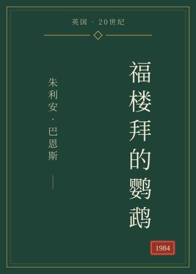

福楼拜的鹦鹉
一、基本信息
| 作者 | 朱利安·巴恩斯 |
|---|---|
| 成书/出版 | 1984年（Britannica：Flaubert's Parrot (1984), Barnes's breakthrough novel） Julian Barnes — Encyclopaedia Britannica（百科全书） |
| 国别/地区 | 英国 |
| 时代 | 现当代 · 20世纪 |
| 体裁 | 长篇小说 |
| 语言 | 英语 |
《福楼拜的鹦鹉》文体拼贴图（主题·结构图）
二、创作背景
Britannica（B290）：'Flaubert's Parrot (1984), Barnes's breakthrough novel, is a humorous mixture of biography, fiction, and literary criticism'（幽默混合传记、虚构与文学批评——B290）；'was shortlisted for the Booker Prize'（入围布克奖——B290）。
作者（B290）：'inventive and intellectual novels about obsessed characters curious about the past'。
三、内容脉络
退休医生杰弗里追寻福楼拜的'那只鹦鹉'——传记、虚构与批评的混体（通说待核）。
四、主要人物表
| 人物 | 身份 | 说明 |
|---|---|---|
| 杰弗里·布雷思韦特 | 退休医生 | （通说待核） |
| 福楼拜 | 作家 | 被研究的对象 |
五、主题与艺术特点
- '那只鹦鹉'：作家的真身在哪里（通说待核）。
- 传记、虚构与批评的混合（B290）。
- 寡居的哀悼（通说待核——妻子病亡线）。
六、影响与评论
- Britannica：'breakthrough novel'；'shortlisted for the Booker Prize'（B290）。
Julian Barnes — Encyclopaedia Britannica（百科全书） - 作者页：巴恩斯'obsessed characters curious about the past'（B290 作者级定位）。
Julian Barnes — Encyclopaedia Britannica（百科全书）
七、阅读建议
难点
- 文体拼贴（年表/考试卷/目录）。
- 福楼拜生平知识。
- 《福楼拜的鹦鹉》（译林出版社，通说待核）。
- 英文原版（Jonathan Cape）。
巴恩斯入门首选。
八、待核实
- 1984年出版（Jonathan Cape说）核对。
- 杰弗里·布雷思韦特人名核对。
- 鹦鹉标本的'真假两只'细节待核。
本页主要来源
朱利安·巴恩斯的其他收录作品：福楼拜的鹦鹉10 1/2章世界史